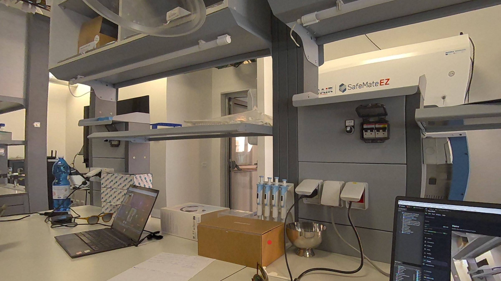
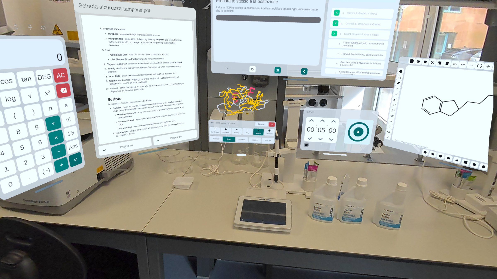
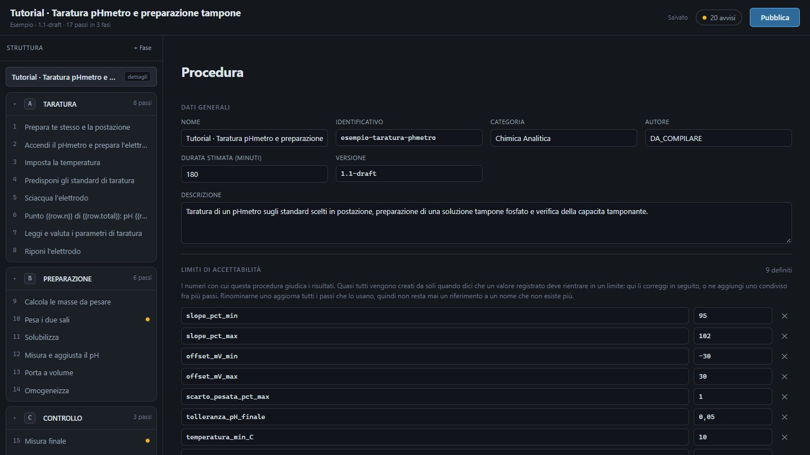

One step at a time
The current step floats above the instrument.
The hands-free lab assistant.
Your procedure, beside the instrument. On Meta Quest 3 and 3S.


Every clip recorded through the headset, in a real lab.
The current step floats above the instrument.
PPE and set-up, ticked off with a fingertip.
Each value checked against its limits as you enter it.
Calculator, timer, notes, assistant. One tap away.
Sketch a structure with a fingertip.
Open a PDB entry in 3D and turn it by hand.
Written and checked at the desk. Never edited at the bench.
The real app. Take the Tour, or build one in Guided.

Studio is a desktop app. Open this page on a computer to try it here.
Privacy
Procedures, readings and voice stay on one lab computer and your headsets.
Procedures, safety sheets, answers
Readings, photos, voice notes
Lab Wi-Fi or a USB cable. Nothing to sign up for.
Speech, assistant and import all run locally.
Only when you ask what something is.
Team
Veyra is built by two people: one leads the technology, the other the science behind it.
Co-founder · Technology
XR developer. Leads the technology behind Veyra, from the Meta Quest app at the bench to Studio at the desk.
About MartinaCo-founder · Science
Chemist. Leads the science behind Veyra: procedures, safety data, calculations and analysis, all held to real lab practice.
About FilippoTen questions, about three minutes. Your answers decide what we build next.
The survey is in Italian.
At the end you can leave your email for a 10-minute call or to try an early version. It is optional.